Info badge
Badging is a non-intrusive and intuitive way to display notifications or bring focus to an area within an app - whether that be for notifications, indicating new content, or showing an alert. An info badge is a small piece of UI that can be added into an app and customized to display a number, icon, or a simple dot.
The info badge is built into the XAML navigation view, but can also be placed as a standalone element in the XAML tree, allowing you to place an info badge into any control or piece of UI of your choosing. When you use an info badge somewhere other than navigation view, you are responsible for programmatically determining when to show and dismiss the info badge, and where to place the info badge.
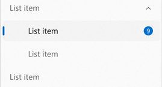
Is this the right control?
An info badge should be used when you want to bring the user's focus to a certain area of your app in an unintrusive way. When an info badge appears, it is meant to bring focus to an area and then let the user get back into their flow, giving them the choice of whether or not to look into the details of why the info badge appeared. Info badges should only represent messages that are dismissible and non-permanent – an info badge should have specific rules as to when it can appear, disappear, and change.
Examples of appropriate info badge usage:
- To indicate new messages have arrived.
- To indicate new articles are available to read.
- To indicate that there are new options available on a page.
- To indicate that there might be an issue with an item on a certain page that does not block the app from functioning.
When should a different control be used?
An info badge should not be used to display critical errors or convey highly important messages that need immediate action. Info badges should not be used in cases where they need to be interacted with immediately to continue using the app.
Examples of inappropriate info badge usage:
- To indicate an urgent matter on a page within the app that needs to be addressed before continuing to use the app. For this scenario, use a content dialog.
- Appearing in an app with no way for the user to dismiss the info badge. For a persistent alert like this, use an info bar.
- Using the info badge as a permanent way of bringing the user's focus to an area, without a way for the user to dismiss the info badge.
- Using an info badge as a regular icon or image in your app. Instead, use an appropriate image or icon (see IconElement and IconSource).
Types of info badges
There are three styles of info badge that you can choose from - dot, icon, and numeric, as shown in order below.
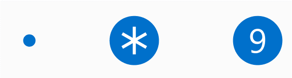
Dot info badge
The dot info badge is a simple ellipse with a diameter of 4px. It has no border, and is not meant to hold text or anything else inside of it.
You should use the dot info badge for general scenarios in which you want to guide the user's focus towards the info badge – for example, to indicate new content or updates are available.
Icon info badge
The icon info badge is an ellipse with a diameter of 16px that holds an icon inside of it. The info badge has an IconSource property that provides flexibility for the types of supported icons.
You should use the icon info badge to send a quick message along with getting the user's attention – for example, to alert the user that something non-blocking has gone wrong, an extra important update is available, or that something specific in the app is currently enabled (such as a countdown timer going).
If you'd like to use a BitmapIconSource for the IconSource of your info badge, you are responsible for ensuring that the bitmap fits inside of the info badge (either by changing the size of the icon, or changing the size of the info badge).
Numeric info badge
The numeric info badge is the same shape and size as the icon info badge, but it holds a number inside of it, determined by the Value property. Numbers must be whole integers and must be greater than or equal to zero. The width of the info badge will automatically expand as the number being displayed grows to multiple digits, with a smooth animation.
You should use the numeric info badge to show that there are a specific number of items that need attention – for example, new emails or messages.
Preset info badge styles
To help support the most common scenarios in which info badges are used, the control includes built-in preset info badge styles. While you can customize your info badge to use any color/icon/number combination that you want, these built-in presets are a quick option to make sure that your info badge is compliant with accessibility guidelines and is proportional in terms of icon and number sizing.
The following style presets are available for info badges:
Attention
AttentionDotInfoBadgeStyleAttentionIconInfoBadgeStyleAttentionValueInfoBadgeStyle
Informational
InformationalDotInfoBadgeStyleInformationalIconInfoBadgeStyleInformationalValueInfoBadgeStyle
Success
SuccessDotInfoBadgeStyleSuccessIconInfoBadgeStyleSuccessValueInfoBadgeStyle
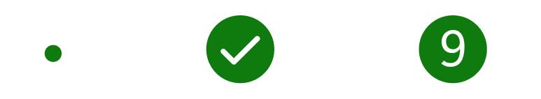
Caution
CautionDotInfoBadgeStyleCautionIconInfoBadgeStyleCautionValueInfoBadgeStyle
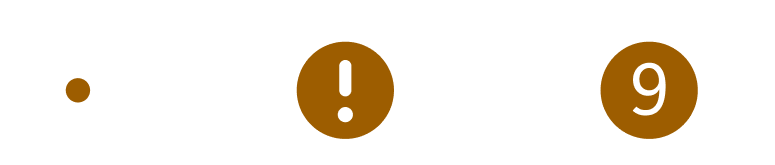
Critical
CriticalDotInfoBadgeStyleCriticalIconInfoBadgeStyleCriticalValueInfoBadgeStyle
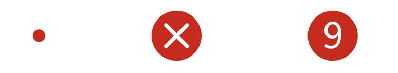
If a style is set on an info badge and a conflicting property is also set, the property will overwrite the conflicting part of the style, but non-conflicting style elements will stay applied.
For example, if you apply the CriticalIconInfoBadgeStyle to an info badge, but also set InfoBadge.Value = "1", you would end up with an info badge that has the "Critical" background color but displays the number 1 inside of it, rather than displaying the preset icon.
This example creates an info badge that takes on the color and icon of the Attention Icon preset style.
<InfoBadge Style="{ThemeResource AttentionIconInfoBadgeStyle}"/>
Accessibility
The info badge control does not have any screen reader functionality or user interface automation (UIA) built-in to it on its own, as the control is not focusable and cannot be interacted with.
If you're using an info badge inside of a navigation view, the navigation view provides built-in screen reader and assistive technology support. When you're tabbing through a navigation view and you land on a navigation view item with an info badge on it, the screen reader will announce that there is an info badge on this item. If the info badge in question is numeric, the screen reader will announce the info badge's value as well.
If you are using an info badge outside of a navigation view, we recommend the following to ensure your app is fully accessible:
- The parent element of the info badge should be focusable and accessible by tab.
- The parent element announces the info badge to screen readers.
- The app sends a UIA notification when the info badge appears for the first time.
- The app sends a UIA notification when an info badge disappears from the UI.
- The app sends a UIA notification when a significant change has occurred with an existing info badge.
- The definition of "significant change" is up to you as the individual developer. Examples of this can include: an info badge switching between different types, an info badge changing color to represent its status, or an info badge's value exceeding a certain significant number.
To control what the parent element announces to screen readers, you can use attached properties of the AutomationProperties class. For an info badge, it's recommended that you set either the AutomationProperties.FullDescription or AutomationProperties.ItemStatus attached properties on the parent element.
To send UIA notifications upon the info badge's appearance or dismissal, you can use the AutomationPeer.RaiseAutomationEvent method.
The info badge comes at a default size that meets accessibility requirements. You can customize many aspects of the info badge including its height/width/color, etc., but it's important that the default info badge adheres to our accessibility guidelines for size and color.
Create an InfoBadge
Important
Some information relates to prerelease product that may be substantially modified before it’s released. Microsoft makes no warranties, express or implied, with respect to the information provided here.
- Important APIs: InfoBadge class, IconSource property, Value property
The WinUI 3 Gallery app includes interactive examples of most WinUI 3 controls, features, and functionality. Get the app from the Microsoft Store or get the source code on GitHub
You can create an InfoBadge in XAML or in code. The kind of InfoBadge you create is determined by which properties you set.
Dot
To create a dot InfoBadge, use a default InfoBadge control with no properties set.
<InfoBadge />
Icon
To create an icon InfoBadge, set the IconSource property.
<InfoBadge x:Name="SyncStatusInfoBadge">
<InfoBadge.IconSource>
<SymbolIconSource Symbol="Sync"/>
</InfoBadge.IconSource>
</InfoBadge>
Numeric
To create a numeric InfoBadge, set the Value property.
<InfoBadge x:Name="EmailInfoBadge" Value="{x:Bind numUnreadMail}"/>
In most scenarios, you'll bind the Value property of the InfoBadge to a changing integer value in your app's backend so you can easily increment/decrement and show/hide the InfoBadge based on that specific value.
Note
If both the Icon and Value properties are set, the Value property takes precedence and the InfoBadge appears as a numeric InfoBadge.
Using an InfoBadge in NavigationView
If you're using a NavigationView in your app, we recommend that you use an InfoBadge in the NavigationView to show app-wide notifications and alerts. To place the InfoBadge on a NavigationViewItem, assign the InfoBadge object to the NavigationViewItem.InfoBadge property.
In Left-Expanded mode, the InfoBadge appears right-aligned to the edge of the NavigationViewItem.
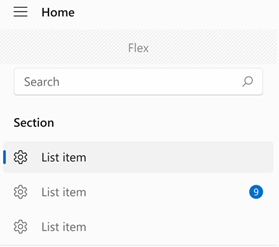
In Left-Compact mode, the InfoBadge appears overlayed on the top right corner of the icon.
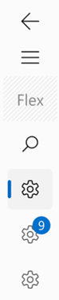
In Top mode, the InfoBadge is aligned to the upper right hand corner of the overall item.
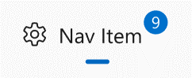
We recommend that you not use different types of InfoBadges in one NavigationView, such as attaching a numeric InfoBadge to one NavigationViewItem and a dot InfoBadge to another NavigationViewItem in the same NavigationView.
Example: Incrementing a numeric InfoBadge in a NavigationView
This example simulates how an email app could use an InfoBadge in a NavigationView to display the number of new emails in the inbox, and increment the number shown in the InfoBadge when a new message is received.
<NavigationView SelectionChanged="NavigationView_SelectionChanged">
<NavigationView.MenuItems>
<NavigationViewItem Content="Home" Icon="Home"/>
<NavigationViewItem Content="Account" Icon="Contact"/>
<NavigationViewItem x:Name="InboxPage" Content="Inbox" Icon="Mail">
<NavigationViewItem.InfoBadge>
<InfoBadge x:Name="bg1"
Value="{x:Bind mailBox.NewMailCount, Mode=OneWay}"
Visibility="{x:Bind mailBox.HasNewMail, Mode=OneWay}"/>
</NavigationViewItem.InfoBadge>
</NavigationViewItem>
</NavigationView.MenuItems>
<Frame x:Name="contentFrame" />
</NavigationView>
public sealed partial class MainWindow : Window
{
MailBox mailBox = new MailBox();
public MainWindow()
{
this.InitializeComponent();
}
private void NavigationView_SelectionChanged(NavigationView sender,
NavigationViewSelectionChangedEventArgs args)
{
if (args.SelectedItem == InboxPage)
{
mailBox.ResetNewMailCount();
}
else
{
mailBox.CheckMail();
}
}
}
public class MailBox : DependencyObject
{
DispatcherQueueTimer timer;
// Dependency Properties for binding.
public int NewMailCount
{
get { return (int)GetValue(NewMailCountProperty); }
set { SetValue(NewMailCountProperty, value); }
}
public static readonly DependencyProperty NewMailCountProperty =
DependencyProperty.Register("NewMailCount", typeof(int), typeof(MailBox), new PropertyMetadata(0));
public bool HasNewMail
{
get { return (bool)GetValue(HasNewMailProperty); }
set { SetValue(HasNewMailProperty, value); }
}
public static readonly DependencyProperty HasNewMailProperty =
DependencyProperty.Register("HasNewMail", typeof(bool), typeof(MailBox), new PropertyMetadata(false));
public MailBox()
{
timer = this.DispatcherQueue.CreateTimer();
timer.Interval = new TimeSpan(15000000);
timer.Tick += (s, e) =>
{
NewMailCount++;
if (HasNewMail == false) { HasNewMail = true; }
};
timer.Start();
}
public void ResetNewMailCount()
{
NewMailCount = 0;
HasNewMail = false;
timer.Stop();
}
public void CheckMail()
{
timer.Start();
}
}
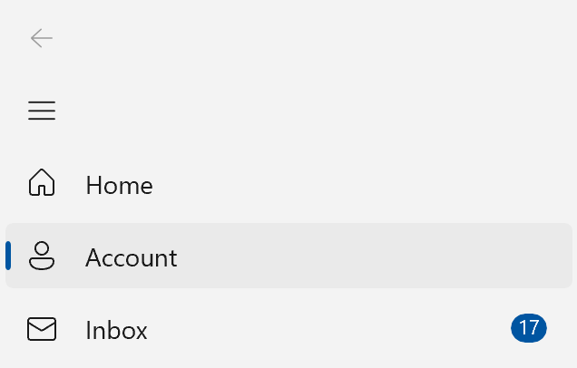
Hierarchy in NavigationView
If you have a hierarchical NavigationView, with NavigationViewItems nested in other NavigationViewItems, parent items will follow the same design/placement patterns as described above.
The parent NavigationViewItem and child NavigationViewItems will each have their own InfoBadge property. You can bind the value of the parent's InfoBadge to factors that determine the children's InfoBadge values, such as showing the sum of the children's numeric InfoBadges on the parent's InfoBadge.
This image shows a hierarchical NavigationView with its PaneDisplayMode set to Top, where the top-level (parent) item shows a numeric InfoBadge. The app has set the parent item InfoBadge to represent what's being displayed in the child items' InfoBadges, as the child items are currently not expanded (and therefore not visible).
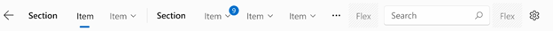
Using an InfoBadge in another control
You might want to show alerts or notifications on elements within your app other than NavigationView. You might have a ListViewItem that needs special attention, or a menu item that displays a notification. In these cases, you can integrate InfoBadge directly into your UI with other controls.
InfoBadge is a UIElement and therefore cannot be used as a shared resource.
To do this, use InfoBadge as you would any other control – simply add the InfoBadge markup where you'd like it to appear. Since InfoBadge inherits from Control, it has all the built-in positioning properties, such as margin, alignment, padding, and more, which you can use to position your InfoBadge exactly where you want it.
If you place an InfoBadge inside of another control, such as a Button or a ListViewItem, it will likely get cropped if you position it to extend beyond the bounding box of the parent control. If your InfoBadge is inside of another control, it should not be positioned past the corners of the control's overall bounding box.
Example: Placing an InfoBadge inside another control
Here's a Button that has an InfoBadge placed in its upper right hand corner, with the badge layered on top of the content. This example can be applied to many controls other than Button as well – it simply shows how to place, position, and show an InfoBadge inside of another WinUI control.
<Button Width="200" Height="60" Padding="4"
HorizontalContentAlignment="Stretch" VerticalContentAlignment="Stretch">
<Grid>
<SymbolIcon Symbol="Sync"/>
<InfoBadge x:Name="buttonInfoBadge"
Background="#C42B1C"
HorizontalAlignment="Right"
VerticalAlignment="Top"
Width="16" Height="16">
<InfoBadge.IconSource>
<FontIconSource Glyph=""/>
</InfoBadge.IconSource>
</InfoBadge>
</Grid>
</Button>
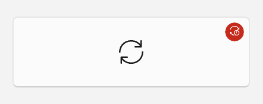
Managing an InfoBadge
An InfoBadge typically displays a transient alert, so it's common to show or hide it, and change it's style periodically while your app is running.
Showing and hiding an InfoBadge
You can use either the Visibility property or Opacity property to show and hide an InfoBadge based on user actions, program logic, counters, etc.
As with other UIElements, setting Visibility.Collapsed will make the InfoBadge not take space in your layout, so it might cause other elements to move around when it's shown and hidden.
If elements being repositioned is a concern, you can use the Opacity property to show and hide the InfoBadge. Opacity is set to 1.0 by default; you can set it to 0 to hide the InfoBadge. When you use the Opacity property, InfoBadge will still take up space in the layout even if it is currently hidden.
Change the InfoBadge style
You can change the icon or number displayed in an InfoBadge while it is being shown. Decrementing or incrementing a numeric InfoBadge based on user action can be achieved by changing the value of InfoBadge.Value. Changing the icon of an InfoBadge can be achieved by setting InfoBadge.IconSource to a new IconSource object. When changing icons, ensure that the new icon is the same size as the old icon to avoid a jarring visual effect.
Default behavior
If neither InfoBadge.Value nor InfoBadge.IconSource are set, the InfoBadge defaults to showing a dot (specifically if Value is set to -1 and IconSource is set to null, which are the default values). If both the Value and IconSource properties are set, the InfoBadge will honor the Value property and display a number value.
You can also change the InfoBadge's type while it is being shown. To change the type of InfoBadge, be sure that the current type's corresponding property (Value or IconSource) is set to its default value (-1 or null), and set the new type's property equal to an appropriate value. To change the type of InfoBadge from numeric or icon to a dot type InfoBadge, make sure that InfoBadge.Value is set to -1 and InfoBadge.IconSource is set to null.
Depending on how you've positioned your InfoBadge, be aware that this may cause items to shift as the size and shape of the InfoBadge may change.
UWP and WinUI 2
Important
The information and examples in this article are optimized for apps that use the Windows App SDK and WinUI 3, but are generally applicable to UWP apps that use WinUI 2. See the UWP API reference for platform specific information and examples.
This section contains information you need to use the control in a UWP or WinUI 2 app.
The InfoBadge for UWP apps requires WinUI 2. For more info, including installation instructions, see WinUI 2. APIs for this control exist in the Microsoft.UI.Xaml.Controls namespace.
- WinUI 2 Apis: InfoBadge class, IconSource property, Value property
- Open the WinUI 2 Gallery app and see InfoBadge in action. The WinUI 2 Gallery app includes interactive examples of most WinUI 2 controls, features, and functionality. Get the app from the Microsoft Store or get the source code on GitHub.
To use the code in this article with WinUI 2, use an alias in XAML (we use muxc) to represent the Windows UI Library APIs that are included in your project. See Get Started with WinUI 2 for more info.
xmlns:muxc="using:Microsoft.UI.Xaml.Controls"
<muxc:InfoBadge/>